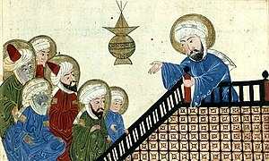

A Turquia é um país com uma rica história e cultura, e muitas festividades e mitos fazem parte da sua tradição. Aqui estão alguns exemplos:
Festival da Primavera (Nevruz): Nevruz é um antigo festival turco que celebra o início da primavera. Ele é comemorado em 21 de março, e é um momento de renovação e renascimento. As pessoas costumam dançar, cantar e acender fogueiras para marcar a ocasião.
Lenda de Asena: A lenda de Asena é uma história antiga que remonta aos tempos dos turcos nômades. Diz-se que uma loba ferida adotou um bebê turco e o criou como seu próprio filhote. O bebê cresceu e se tornou o líder de uma tribo turca, e a loba se tornou a protetora espiritual da tribo.
Festival de Ísis (Kadir Gecesi): Kadir Gecesi é uma festa muçulmana que celebra a noite em que o profeta Maomé recebeu as primeiras revelações do Corão. As pessoas costumam se reunir em mesquitas e recitar orações durante toda a noite.
Festival do Sacrifício (Kurban Bayramı): O Festival do Sacrifício é um feriado muçulmano que celebra a disposição de Abraão em sacrificar seu filho em obediência a Deus. Durante o festival, os muçulmanos sacrificam um animal e dividem a carne com a comunidade.
Lenda de Efsunlu Kısrak: Efsunlu Kısrak é uma lenda turca sobre uma égua mágica que pode curar doenças e feridas. Diz-se que a égua vive em uma caverna perto de uma fonte de água sagrada, e que aqueles que a encontram podem receber sua cura mágica.
Esses são apenas alguns exemplos da rica tradição de mitos e festividades da Turquia, que refletem a diversidade e profundidade da cultura turca.